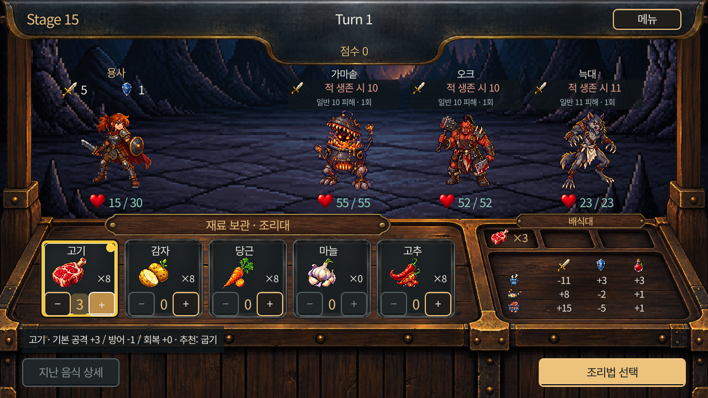

01 · 이어온 핵심
푸드트럭 같은 공간에서 요리해 바깥의 용사에게 제공하는 관계를 유지합니다. 공모전 원작의 규칙과 자료를 출발점으로 삼았으며, 별개의 게임 두 개를 만든 사례는 아닙니다.
원작의 제출 제약과 결과는 공모전 원작 페이지에 구분해 두었습니다.
02 · 달라진 부분
같은 작품의 두 개발 단계입니다. 아래는 플레이 흐름에서 확인할 수 있는 차이를 중심으로 비교했습니다. PC는 왼쪽 원작·오른쪽 Godot, 모바일은 원작 다음 Godot 순서입니다.
이미지 쌍은 같은 ‘재료 선택’ 또는 ‘조리법 선택’ 단계로 맞췄지만 적·스테이지·재료·수치는 다릅니다. Godot 화면은 공개 기준과 같은 0.14.0-web.1의 로컬 자동 검증 캡처이며, 이번에 라이브 게임을 다시 캡처한 것은 아닙니다. 같은 조건의 성능·밸런스 전후 실험으로 해석하지 않습니다.
재료 선택: 키 안내에서 조리대 클릭으로
공모전 원작

방향키·Space·Esc 중심의 안내와 재료별 수량 선택을 표시합니다.
Godot 후속 버전

같은 재료 선택 단계를 조리대의 +/− 버튼과 ‘조리법 선택’ 클릭으로 진행합니다.
- 무엇이 달라졌나
- 재료를 선택하고 수량을 정하는 흐름은 이어가되, 필수 진행을 마우스로 할 수 있도록 구성했습니다. 조리 공간과 바깥 전장을 한 화면에서 보여줍니다.
- 변경 배경
- 사용자가 푸드트럭 같은 조리 공간 유지와 마우스 중심 조작을 요청한 기록에 근거합니다. 조작 속도가 빨라졌다는 측정은 없습니다.
- 사람과 AI
- 사람은 컨셉·조작 방향과 플레이 피드백을 전달했고, AI가 배치·입력·클릭 영역과 검사를 작성했습니다.
조리법 선택: 기존 효과 수치를 맥락과 함께
공모전 원작

끓이기·튀기기·굽기와 최종 효과 수치가 이미 표시돼 있으며, Esc로 재료 편집에 돌아가는 흐름이 있습니다.
- 무엇이 달라졌나
- 최종 수치 프리뷰와 재료 편집 복귀 흐름을 계승했습니다. 조리 취소·재선택·제공을 클릭 버튼으로 분리해 보여주며, 취소나 효과 표시 자체가 처음 생긴 것처럼 설명하지 않습니다.
- 변경 배경
- 사용자가 과도하게 담았을 때의 취소와 조리 공간 유지 등을 요청했습니다. 구체적 카드·버튼 배치는 AI 구현안이며 모든 세부 디자인을 사용자가 설계한 것으로 쓰지 않습니다.
- 사람과 AI
- 사람은 플레이 중 불편과 유지할 핵심을 피드백했고, AI가 표시·취소 동작·배식 연출과 자동 검사를 구현했습니다.
전투 피드백: 예고와 실제 결과를 구별
공모전 원작
원작에도 용사·적 HP, 피해 표시와 전투 연출이 있으며, 음식 최종 효과 프리뷰도 존재합니다.
Godot 후속 버전
적이 살아 있을 때의 조건부 피해 예고, 제공 후 효과, 전투 완료 후 실제 HP와 지난 음식 상세를 구분해 표시합니다.
- 무엇이 달라졌나
- ‘전투 정보를 처음 추가’한 변경이 아니라 언제 어떤 수치인지 구분하는 표시를 보강했습니다. 이 항목은 확인된 문서·검사에 근거한 텍스트 비교입니다.
- 변경 배경
- 기존 정보 혼동을 줄이기 위한 후속 피드백과 개선 기록에 근거합니다. 재미·판단 정확도·승률이 좋아졌다는 결과는 확인하지 않았습니다.
- 사람과 AI
- AI가 표시와 검사를 작성했고 사람은 방향·플레이 피드백에 관여했습니다. 동일 전투 직전·직후를 맞춘 원작 캡처는 확보가 필요하므로 이미지 쌍을 만들지 않았습니다.
실행 경로: 제출 파일에서 웹 개발판으로
공모전 원작
1.44MB 공모전 제출 제약 안의 Windows 실행 파일입니다. 제출 폴더를 내려받아 실행하며, 당시 용량 확인과 플레이 기록을 구분해 보존합니다.
Godot 후속 버전
용량 제한을 계승하지 않는 Godot 후속 개발판입니다. 웹 브라우저에서 실행하며, 헤드리스 검사·웹 빌드와 실제 화면·브라우저 검사를 나눠 진행합니다.
- 무엇이 달라졌나
- 같은 작품을 전달하는 플랫폼과 검사 과정이 달라졌습니다. 원작에 검사가 없었던 것처럼 비교하지 않습니다. 상세한 개발 환경은 다음 절에서 설명합니다.
- 변경 배경
- 별도 후속 개발과 웹 중심 전달이라는 기록에 근거합니다. 더 많은 이용자·매출·운영 성과를 달성했다는 의미는 아닙니다.
- 사람과 AI
- AI가 엔진 전환·도구·웹 빌드를 중심적으로 수행했고 사람은 핵심 방향과 플레이 피드백에 집중했습니다. 수정 중인 BGM 시험판은 완료 기능 비교에서 제외했습니다.
03 · 환경과 개발 방식
- 개발 환경
- Godot 4.7 · GDScript
- 플랫폼과 조작
- 웹 브라우저 · 마우스 · 16:9
- AI 도구와 역할
- Codex: 엔진 전환·구현·문서·자동 검사
imagegen: 일부 UI 이미지 - 사람의 역할
- 핵심 컨셉 방향 제시 · 플레이 후 피드백
엔진을 선택할 때 검토한 점
LÖVE와 Godot을 비교할 때, 화면·데이터·리소스를 관리하며 수정하는 흐름을 Godot의 장점으로 검토했습니다. 이후 Godot을 선택해 원작 규칙을 다시 작성하고 기존 결과와 대조했습니다. 직접 에디터 편집을 선호해서 선택했다고 단정할 근거는 없으며, 이 설명은 당시 비교 기록과 실제 작업 적합성에 근거합니다.
AI 구현과 실행 확인을 나눈 과정
- 사람이 핵심 컨셉과 수정 방향을 전달하고, AI가 코드·화면·문서를 작성했습니다.
- 화면을 띄우지 않는 Godot 헤드리스 모드로 리소스 임포트, 검사 스크립트 구문 확인, 규칙·흐름 자동 검사를 진행했습니다. 같은 명령 기반 도구로 웹 빌드를 내보냈습니다.
- 별도로 실제 Windows 실행 화면과 브라우저 WebAssembly에서 조작·배치·언어·결과 표시를 확인했습니다. 자동 입력 검사는 사람 플레이와 구별했습니다.
- 플레이 후 피드백을 받아 AI가 수정하고, 해당 동작을 다시 검사하는 과정을 반복했습니다.
헤드리스 검사는 시각적 완성도·실제 청취·재미 검증을 대신하지 않습니다. 영어 기본·한국어·일본어 UI가 있으며, 전문 번역 감수 완료를 뜻하지 않습니다.
이미지와 사운드는 기존 자산 재사용과 생성 자산이 섞여 있습니다. 효과음 12종은 제공된 생성 음원을 통합했으며, 구현·자동 검사와 사람의 청취 판단은 구분합니다. 개발·문서·검사 작업은 AI가 중심적으로 수행했습니다.
04 · 작업물과 현재 상태
개발 중 · 웹 공개 버전 제공
웹 공개는 현재 배포 상태입니다. 사용자 수·매출·만족도 등 운영 성과는 확인되지 않았습니다.
후속 변경은 별도 시험·확인을 거쳐 반영하고 있습니다. 이 페이지의 비교 화면은 0.14.0-web.1 기준이며, 최신 공개 빌드의 확인 상태와 구분합니다. 시험 전용 페이지는 기본 플레이 링크에 연결하지 않았습니다.